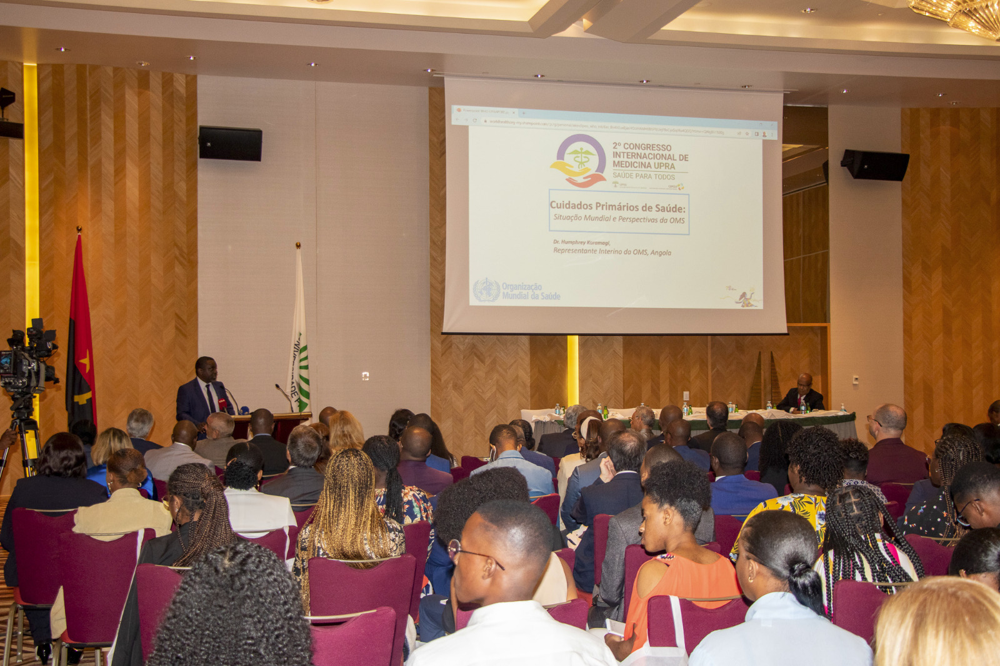

Actualização Científica
Conferências e comunicações com evidência científica actual sobre segurança e cuidados perioperatórios.
"Excelência e Inovação na Sala Operatória: Cuidar, Formar, Transformar"
Três dias de ciência, prática e networking dedicados à enfermagem perioperatória angolana — conferências com convidados nacionais e internacionais, workshops práticos e o maior encontro profissional da área em Angola.
Organizado pela AESOA, o Congresso Nacional reúne enfermeiros perioperatórios, instrumentistas, docentes e gestores de saúde de todas as províncias para três dias de actualização científica, partilha de experiências e valorização da profissão.
Entre conferências, mesas-redondas, workshops práticos e comunicações livres, o congresso é o espaço de referência para conhecer as boas práticas mais recentes na sala operatória e reforçar a rede nacional de profissionais desta área.
Um programa desenhado para actualizar conhecimentos, criar ligações profissionais e reconhecer o trabalho de quem cuida na sala operatória todos os dias.
Conferências e comunicações com evidência científica actual sobre segurança e cuidados perioperatórios.
Momentos dedicados à troca de experiências com colegas de todas as províncias e convidados internacionais.
Certificado de participação emitido pela AESOA, válido para efeitos de formação contínua.
Workshops de mãos-dadas com instrumentação, esterilização e gestão de emergências na sala operatória.
Três dias organizados em conferências, workshops práticos e momentos institucionais. Escolha um dia para ver a agenda detalhada.
Credenciação dos congressistas
Sessão de Abertura Oficial
Boas-vindas da Direcção da AESOA e das entidades convidadas.
Direcção da AESOAO Futuro da Enfermagem Perioperatória em África
Dra. Isabel Cristina MoreiraCoffee-break & Networking
Segurança do Doente e Prevenção de Eventos Adversos
Prof. Dr. João Baptista KialaInstrumentação Cirúrgica Avançada
Enf.º Pedro Manuel SachiamboComunicações Livres — Sessão I
Cocktail de Boas-Vindas
Inovação Tecnológica na Sala Operatória
Prof. Dr. Carlos Alberto NetoControlo de Infeção e Esterilização Hospitalar
Dr. Miguel Ondjaki FerreiraCoffee-break & Networking
Comunicações Livres — Sessão II
Gestão de Equipas em Contexto Cirúrgico
Enf.ª Ana Paula DomingosAssembleia Geral Ordinária da AESOA
Sessão reservada a associados da AESOA.
Jantar de Gala do Congresso
Simulação de Emergências na Sala Operatória
Enf.ª Esp. Beatriz SumboO Papel do Enfermeiro Perioperatório na Próxima Década
Entrega de Certificados e Prémios Científicos
Discurso de Encerramento
Direcção da AESOAAlmoço de Encerramento
Profissionais nacionais e internacionais de referência na enfermagem perioperatória e na gestão hospitalar.
Todas as modalidades incluem acesso às sessões científicas, kit do congresso e certificado de participação. Vagas limitadas.
25 000 Kz
45 000 Kz
65 000 Kz
40 000 Kz / pessoa
Preencha os seus dados. A equipa organizadora entrará em contacto para confirmar o pagamento.
O Congresso Nacional AESOA 2025 realiza-se no Centro de Convenções de Talatona, um dos maiores espaços de eventos de Luanda, preparado para receber congressos científicos de grande dimensão.

Associe a sua marca ao maior encontro de enfermagem perioperatória de Angola. Consulte os pacotes de patrocínio disponíveis.
Logótipo em destaque em todo o material do congresso, stand privilegiado e menção nas sessões de abertura e encerramento.
Presença no material impresso e digital do congresso, com stand de exposição durante os três dias.
Menção como apoiante do congresso no website e nos agradecimentos finais do evento.
Não. O congresso está aberto a todos os profissionais e estudantes da área da saúde. Os associados da AESOA têm, no entanto, condições especiais de inscrição.
Ao inscrever-se, escolhe a modalidade presencial ou online. Os participantes online recebem acesso à transmissão em direto das sessões científicas e aos materiais do congresso.
Sim, todas as modalidades de inscrição incluem certificado de participação emitido pela AESOA no final do congresso.
Sim. Estudantes de enfermagem têm uma tabela reduzida e instituições que inscrevam grupos de 5 ou mais pessoas têm um valor especial por participante.
Os pedidos de cancelamento devem ser enviados por e-mail à organização. As condições de reembolso são partilhadas no momento da confirmação da inscrição.
Pode indicar a sua intenção de submeter um resumo no campo de mensagem do formulário de inscrição. A comissão científica entrará em contacto com as instruções de submissão.
Junte-se a centenas de enfermeiros perioperatórios de todo o país para três dias de ciência, partilha e valorização da profissão.